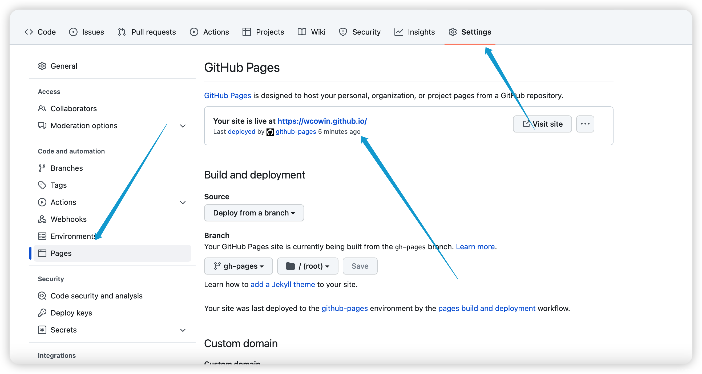
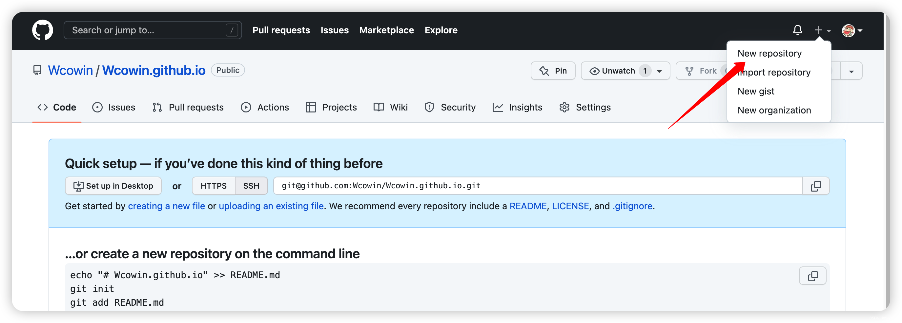
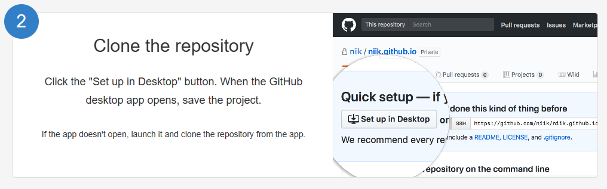
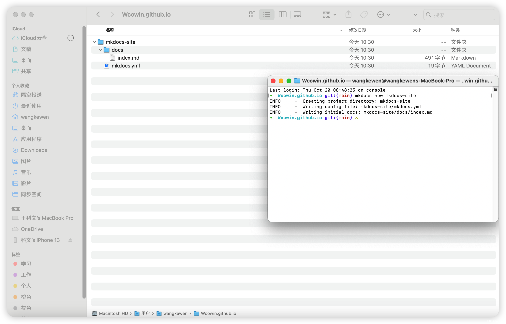
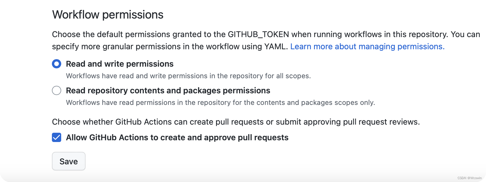
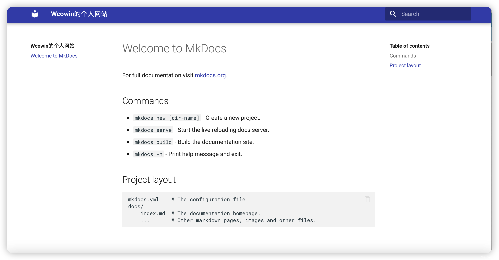
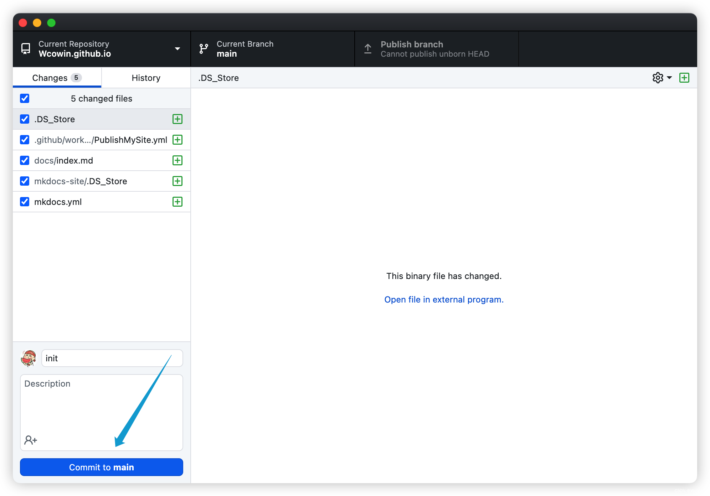
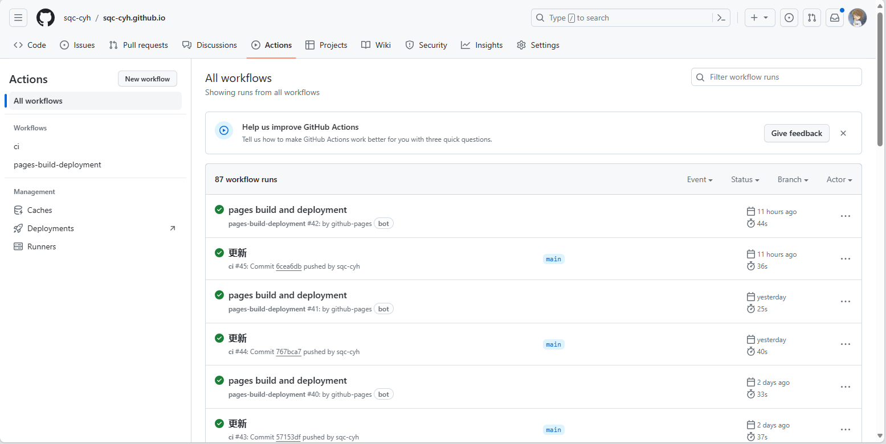

欢迎！¶
约 1440 个字 7 行代码 预计阅读时间 7 分钟
tips
- 写本文的目的是作者水平有限，在创建个人网页的过程中遇到了诸多问题，搜索了许多的教程，有各种版本，于是想做一个整合，可以算是一个集合，里面也包含了我踩过的坑，希望能让一个完全的小白实现搭建个人网页的愿望，如果中间哪几步仍然有表意不明或者坑，请大家在评论区提出或者私信联系我！希望对大家搭建网页有所帮助！引文链接如下：
- 利用mkdocs部署静态网页至GitHubpages（更新版)
- 尝试更改和调整 mkdocs-material 页面的颜色的过程记录
- GitHub Pages 文档自动化部署 - MkDocs
1.部署网页（利用github）¶
首先你必须有一个github账号 github官网
之后如果有能力就可以按照官方给的教程进行搭建啦！ github_page
当然下文会提供更加详细的做法
下载github Desktop客户端（可以理解为github的桌面版，方便之后对仓库的管理）下载链接
在Github创建一个名为你的名字+github.io的仓库


然后打开github Desktop 克隆到本地

这时候如果你在仓库里新建一个文件index.html并输入以下代码：
<!DOCTYPE html>
<html>
<body>
<h1>Hello World</h1>
<p>I'm hosted with GitHub Pages.</p>
</body>
</html>
你就可以输入网址：\(https://[username].github.io/\) 进行查看了。当然，现在只是一个简单的页面。 想要实现较为复杂的个人主页，你当然可以选择从零开始，但是这里更推荐利用已有的框架。下面我将利用mkdocs并以\(material\)主题为例进行介绍。
在你本地保存仓库的文件夹下启动终端并运行：
之后你的终端应该会出现如下三行，并在文件夹中出现如下的目录结构：  docs文件下是你以后个人网站的内容，mkdocs.yml是配置文件。 之后我们的更新都需要部署到github上，这样才能正常更新网页内容。我推荐使用自动部署的方式，这样你每次更新后只需要重复同步的操作，打开github Desktop 点击 commit to main （左下角）\(\implies\) Fetch origin（右上角） 就可以实现更新了。2.自动部署¶
配置自动部署
以下你可能会碰到一些没见过的名词，但没关系，按步骤做就可以啦，后面自然会明白每一步的意义！
先在终端执行下面的代码添加一个GitHub Workflow:
mkdir .github
cd .github
mkdir workflows
cd workflows
vim PublishMySite.yml #该操作是创建一个yml文件并进入vim编辑页面（你可以直接新建一个yml文件，再用vscode等编辑器打开进行编辑）
name: ci
on:
push:
branches:
- master
- main
permissions:
contents: write
jobs:
deploy:
runs-on: ubuntu-latest
steps:
- uses: actions/checkout@v4
- name: Configure Git Credentials
run: |
git config user.name github-actions[bot]
git config user.email 41898282+github-actions[bot]@users.noreply.github.com
- uses: actions/setup-python@v5
with:
python-version: 3.x
- run: echo "cache_id=$(date --utc '+%V')" >> $GITHUB_ENV
- uses: actions/cache@v4
with:
key: mkdocs-material-${{ env.cache_id }}
path: .cache
restore-keys: |
mkdocs-material-
- run: pip install mkdocs-material
- run: mkdocs gh-deploy --force
注意有坑
首先他这个流程，很明显只用pip 安装了 mkdocs-material，但是它并没有安装 mkdocs。其实这无所谓，因为 mkdocs-material 的 requirements.txt 中已经包含了 mkdocs，会一并安装。但如果你之后使用了一些其他依赖的库，比如：mkdocs-blogging-plugin那么你需要在yml文件中添加
- run: pip install mkdocs-blogging-plugin
- 我的配置文件你可以在我的仓库中找到，如有需要请自行寻找。
然后要注意，我们需要调整我们的目录结构。将mkdocs-site文件夹中的docs文件夹和mkdocs.yml移出来，移到你的仓库目录下，然后删去mkdocs-site文件夹（此时已经是一个空文件夹了）
目录树状图:
然后是重点！！在仓库setings/Actions/General 勾选这两项。

之后打开mkdocs.yml，输入以下内容（最简单的配置）:
然后在mkdocs.yml所在的目录终端下运行: 它会给你一个本地的网址类似于：\(http://127.0.0.1:8000/\) 你可以复制它并在浏览器中打开，注意这只是一个本地预览的页面，并未真正上传上去。这一步的目的是方便你在本地进行页面效果的预览，因为部署页面需要时间。在本地查看没有问题后，如出现下图：  然后你就可以去github Desktop上传到github了  最后的最后！！你需要去仓库的setings/pages 选择下图示意的路径：至此你已经完成了全部内容！可以去你的网址\(https://[username].github.io/\) 上查看你的网页啦！
结束之前
我想做一点小小的科普。在仓库的Actions部分，你可以查看你每次更新的进度以及是否成功。

如果失败，你可以点击具体的项目查看是哪一步出现了问题，最容易出现问题的一步是
- run: mkdocs gh-deploy --force
这时候你需要检查你所用的库是否在PublishMysite.yml文件中进行了配置,或者检查你的mkdocs.yml的语法是否出现了问题。
下一篇我将具体讲讲网站的mkdocs.yml具体配置以及如何自定义你页面的颜色图标等等。